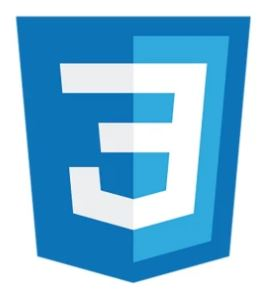
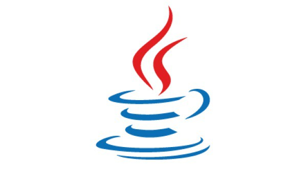

2023'ün En Popüler 5 Programlama Dili

1 -> HTML:
Her bir web sitesinin yapısındaki temel olan HTML’i teknik olarak programlama dili olmasa da bir
“biçimlendirme dili” olarak tanımlayabiliriz. Bu
işaretleme dili ile web sitelerinde istenildiği gibi yazı, video değişiklikleri yapılarak sayfaların birbirine bağlanması sağlanır. Bu sayede web tarayıcısında istenildiği gibi görüntü oluşması sağlanır.

2 -> JavaScript:
JavaScript, GitHub üzerinde de kullanılan en popüler dildir. Geliştiricilerin web siteleri üzerinde etkileşimli öğeler oluşturmasını sağlayarak en çok kullanılan yazılım dillerinden biridir.
Nesnelerin interneti(IoT) ve bazı oyun geliştirme alanlarında da kullanılır. Herhangi bir projenin kullanıcının gördüğü ön kısım üzerinde çalışmak istiyorsanız JavaScript sizin için doğru programlama dili olacaktır.

3 -> CSS:
Türkçesi, Basamaklı Stil Sayfaları olan
“Cascading Style Sheets” veya CSS, web siteleri ve tarayıcı tabanlı uygulamalar tasarlamak için yaygın olarak kullanılan programlama dilidir.Stiller, bir HTML elementinin nasıl görüneceğini belirleme olanağı sağlar, görüntüyü hızlı ve etkili bir şekilde değiştirmenize yarar. Düzenlemesi kolaydır. Ayrıca web sitenize kod fazlalığı yaratmaz.

4 -> SQL:
SQL, yapısal sorgu dili anlamına gelir. Sorgulama sırasında
veriler üzerinde işlemler yapmamızı sağlamaktadır. Veri tabanına erişerek büyük miktarda veri ile ilgilenmenize olanak sağlar ve verilere sahip uygulamalar SQL sistemini kullanarak rahatlıkla veritabanı yönetimi yapılabilmekte.

5 -> JAVA:
Java, Sun Microsystems tarafından oluşturulan ve günümüzde
Android - Web uygulamaları, bilgisayar uygulamaları ve daha fazlası için kullanılır. Java; basit, modern, nesne yönelimli, tip korumalı kullanıcı dostu ve hızlı bir uygulama geliştirme aracıdır. Ekstra olarak, birçok platformda çalışabilme yeteneğine sahiptir.
Karşılaştırma Sonuçları
| Html |
JavaScript |
Css |
Sql |
Java |
| İşaretleme dili. |
Programlama dili |
Programlama dili |
Sorgu dili. |
Programlama dili |
|
|
|
|
|
|
|
|
|
|
|
|
|
|
|